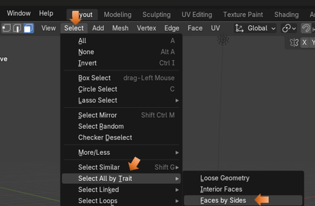

~Ngons~
3/31/2025
Blender Shapes can also come with Ngons
How To Create a Shape from a Single Vertex
To Fill a Shape that You Created
Checking to See if your Object is Right- side Up
What are Ngons?
Ngons are any surfaces that do not have 4 edges. If you take a cube, you will find that every one of its faces, have exactly 4 sides to it. A cube, in this form, is NOT an Ngon.
If you split up a face like this, using something like the knife tool, you no longer have 4 edges. Now you have 2 triangles, and triangles have 3 sides. Once you have turned a face into a 3- sided surface, you can run into some unintended consequences.
Now if you right click, to get to a context menu, and then select to subdivide this box, this is what happens. Blender attempts to do what it can with this side, but it isn’t quite right. It turns everything on this one face into triangles.
And if you reach for your tool box and pull out the Loop cut tool, you will find that Blender will skip this Ngon side all together.
Blender Shapes can also come with Ngons
Blender will also throw Ngons at you on some of its default object. Take for example either a cylinder, or a cone. You will find that the end of the cylinder is a Ngon, and the entire Cone object is nothing but an Ngon. Even the sides of the cone is made up of 3 sided triangles.
And if you try to Loop cut an object and expect to have these Ngons, act right with a loop cut, you will be sorely disappointed.
You will see again, that Blender will attempt to make a cut, but the loop cut will not encircle the entire object, like it should. And just look at the zig-zag loop cut that will appear when you attempt to use this tool on the side of a cone.
Creating Your Own Ngons
If you draw your own shapes from a single vertex, you can also create your own Ngons. At the end of this tutorial, I go more in depth about how to create a shape from a single vertex .
The Knife Cut Tool
With the knife tool, we can make customized cuts, and these cuts will go through a Ngon, as well as any 4- sided surface. The only thing is that when we start to slice and dice, we can easily just create more Ngons and chaos, unless you plan these cuts out very carefully.
How to Find Ngons
Sometimes we may be going along slicing and dicing and create Ngons without realizing it. So, we may want to find these Ngons and try to rectify them. Blender does provide an easy way for us to do this.
Ok, for this one, let’s start off with a cube, with a few knife cuts in it.
Go to the Select Menu option, in the Sub Menu above the viewport. Go to Face Mode for this.
Go to the Sub Menu and find the Select option, then go down to Select All by Trait, and choose Faces by Sides.

At the bottom of the screen, you will see the Last Operation dialog box. Type should default to Equal To.
You have a few options to choose from. But if it is set up to select Equal To 4 (the default option). This way it will select all of the quads. The surfaces that are left unselected will be your Ngons.
Notice that the top and bottom surfaces are also not selected as quads. This is because they are not.
You can go into your vertex mode to see why these faces could not be accepted as quads. Because of your knife cut, you have created an additional edge, which you can see by having an extra vertex in the center of the top and bottom edge of this sliced face.
Turn Ngons to Quads
Ngons can additionally be a problem with shading on your object, when you go into Render mode. So, you might want to try and turn your Ngons first to Triangles, and then to Quads.
Go into face mode
Now we want to try and find all the Ngons. Once you have your quads selected, you need to inverse it to see only your Ngons.
Inverse Selection
Hit Ctrl- I to inverse the selection
Go to the Sub Menu and Select the Face Menu. You want to first Triangulate Faces.
You will notice this will slice up everything into triangles.
Now from that same Face Menu, you want to select Tris to Quads.
Now you notice things a sliced up a bit differently.
You can fine tune things from this point. Since it still might not be perfect.
You can dissolve that inner triangle edge to make the face a whole square.
Go to edge mode.
Select that inner edge that is forming the triangle in the 4-sided face.
Right click on that edge and choose to Dissolve Edges from the context menu at the bottom of the list.
But when you run your Select by Trait test now, you will still see a problem

Cleanup
Not done yet, because you need to clean up extra vertices.
Important! Make sure you are in Vertex mode before you start this process.
Select All. Hit the A key to select the entire cube.
Now running your Select by Trait test, you will no longer see a problem. Now all of the object has turned orange. So, it is all Quads.
How To Create a Shape from a Single Vertex
Start with your default cube in Object mode.
Press the A key, then hit the M key and select merge at center.
Here we are beginning to create a right triangle from our single vertex using the Extrude tool.
To Fill a Shape that You Created
After creating the shape with the extrude tool, and the single vertex, select A, and then F to fill it.
Checking to See if your Object is Right- side Up
Sometimes they come in backwards. So, you want the blue side facing up. Blue is the front or outside, and the red color on the face, is the bottom or inside of an object.
Go to Face Orientation to turn it on or off with the check box
Just uncheck that Face Orientation box, to come out of it.
Changing a Triangle to a Quad
Use the Knife tool to make cuts in these types of objects, that you create free hand, with a single vertex and the extrude tool. In this way we are able to change a triangle into a Quad (4 -sided face)
You could additionally use the extrude tool on this, to give your shape a bit of thickness.
Well, that is about it, on Ngons. So, if you are having an issue with these things, just apply a few of these tricks to keep yourself out of Ngon trouble.